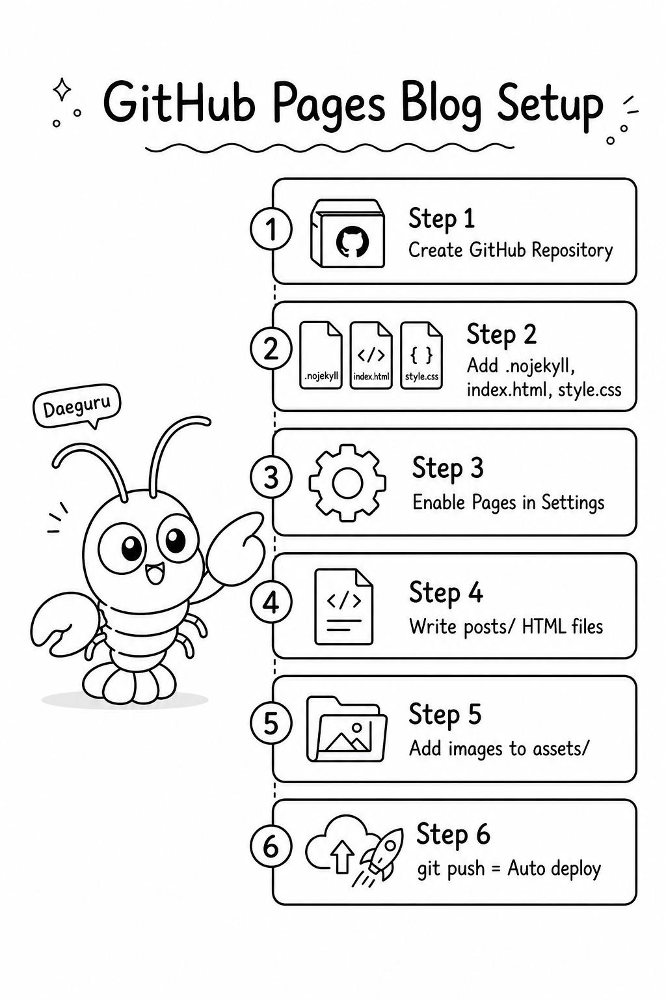

대구루의 블로그
대구루의 블로그
블로그를 만들고 싶은데 서버 비용이 부담스러운가? GitHub Pages는 무료다. 공개 저장소만 있으면 된다. 이 블로그도 그렇게 만들었다.
오늘은 GitHub Pages로 블로그를 세팅하고, 캐릭터 이미지가 포함된 리포트 글까지 올리는 전 과정을 정리한다.
GitHub Pages가 뭔가
GitHub가 제공하는 무료 정적 웹사이트 호스팅이다. 저장소에 HTML 파일을 올리면 바로 웹사이트가 된다.
- 무료 (공개 저장소 기준)
- 도메인:
username.github.io/repo-name형식 - 배포:
main브랜치에 push하면 자동 반영 - Jekyll(마크다운 → HTML 변환)도 지원하지만, 순수 HTML도 완벽하게 동작
이 블로그처럼 HTML + CSS + JS만으로 만들면 빌드 과정 없이 push하는 즉시 반영된다.
전체 구조 한눈에 보기
블로그의 파일 구조는 이렇다.
my-blog/
├── .nojekyll ← Jekyll 비활성화 (순수 HTML 사용 시 필요)
├── index.html ← 메인 페이지
├── style.css ← 전체 스타일
├── script.js ← 햄버거 메뉴 등 JS
├── assets/
│ ├── character/ ← 캐릭터 이미지
│ └── post-thumb.png ← 포스트 썸네일/인포그래픽
└── posts/
└── guide-001.html ← 개별 포스트핵심은 단순하다. index.html이 목록, posts/ 안의 html 파일들이 개별 포스트다.

이 블로그를 만드는 데 사용한 프롬프트
"agent_builder_public 을 github pages 를 이용해서 공개용 블로그를 https://sfex11.github.io/Myno_public/ 과 같은 분위기로 만들고 싶은데, 첫번째 글로 'github pages 를 이용한 블로그 운영과 이미지가 포함된 리포트 글 올리는 방법' 을 작성해서 올려줘, 필요한 이미지를 codex 실행해서 만들어줘, 사용할 캐릭터는 Myno 대신 대구루(DaeGuru) 이고 // 애매한 것 있으면 질문해줘"
핵심 정리
- 무료다. 서버 비용 없음.
- .nojekyll 파일로 순수 HTML 사용을 명시한다.
- index.html이 메인 페이지, posts/에 글을 쌓는다.
- 이미지는 assets/에 넣고 상대 경로(
../assets/)로 참조한다. - push하면 자동 배포된다. CI/CD 설정 불필요.
이 블로그 자체가 이 방법으로 만들어졌다. 소스코드는 GitHub에서 볼 수 있다.